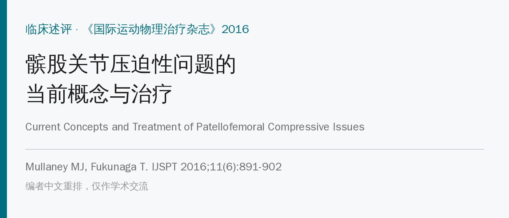
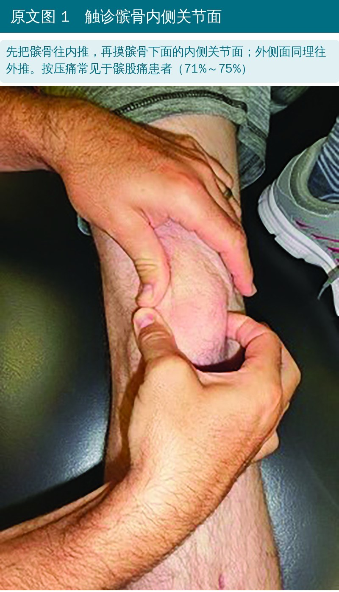
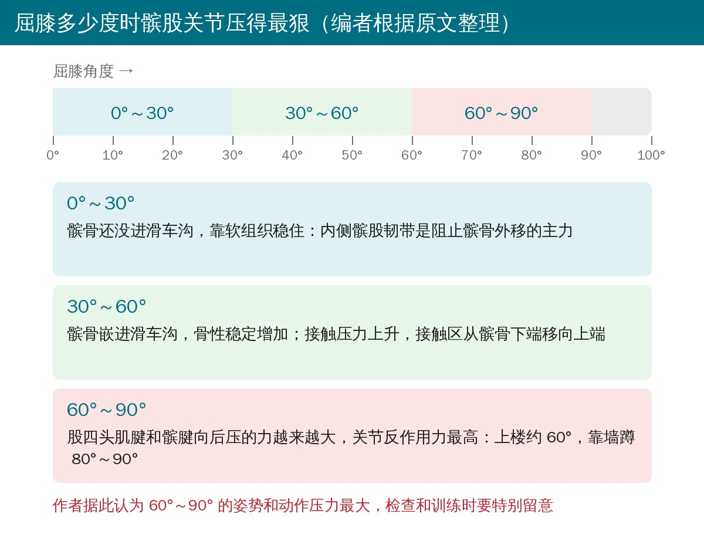
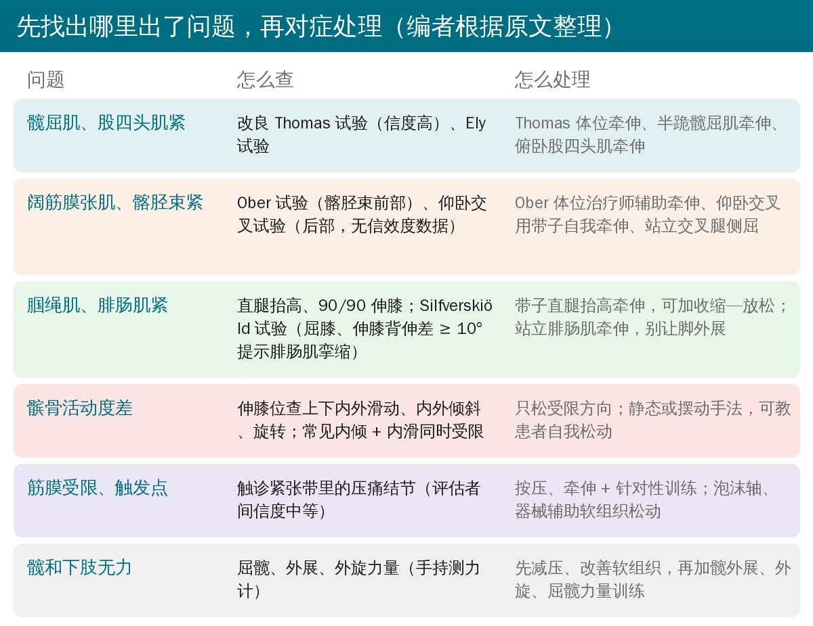
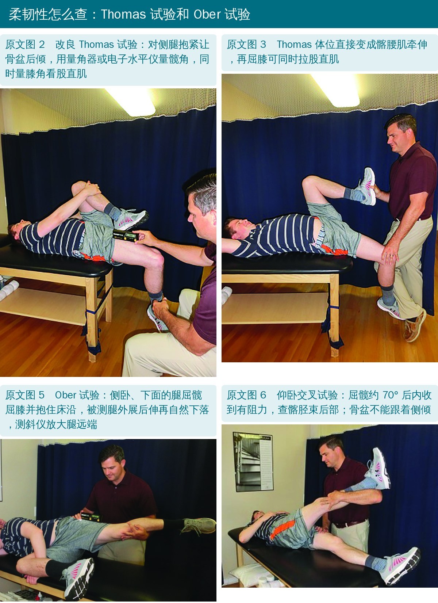
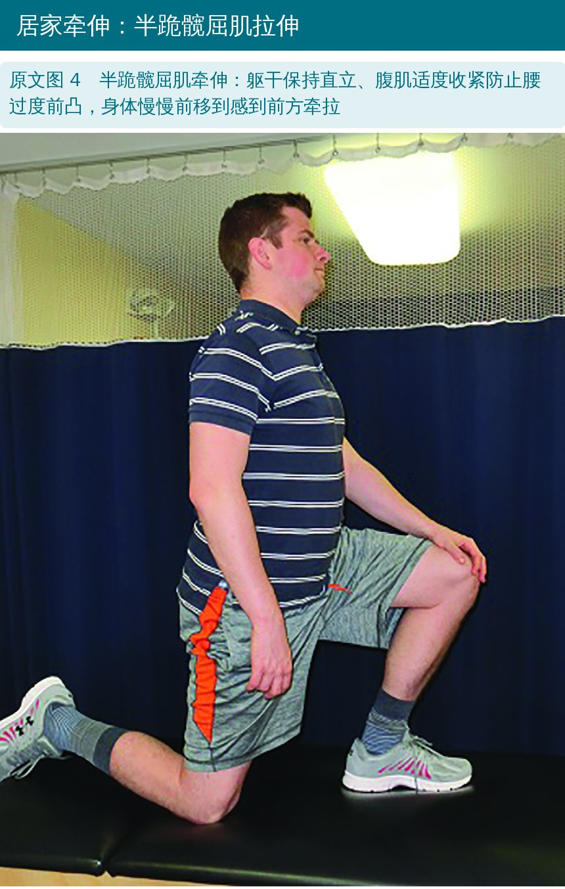
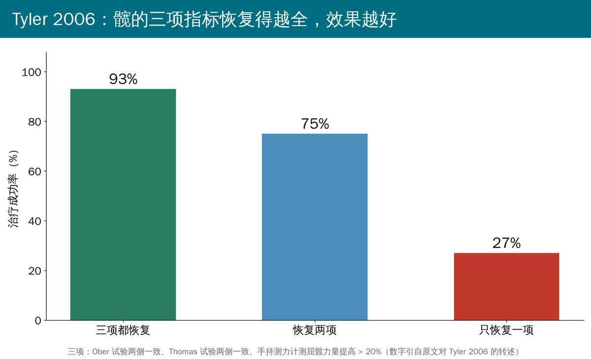

🔖原文信息（编者中文重排）
📚 文献信息
▪ Mullaney MJ, Fukunaga T. Current concepts and treatment of patellofemoral compressive issues. Int J Sports Phys Ther. 2016;11(6):891-902.
▪ 中文题目：髌股关节压迫性问题的当前概念与治疗
▪ 作者来自美国纽约 Nicholas 运动医学与运动创伤研究所、Mullaney & Associates 物理治疗诊所、霍夫斯特拉大学
▪ 临床述评（专家意见），不是原始研究
骨科门诊看的膝伤里，将近 25% 是髌股关节问题。髌股痛综合征的年发病率，男性约 3.8%、女性约 6.5%，青少年多在长个子快的时候出现，成年人可能已经合并退变，而且常常迁延不愈。
作者的切入点是压力：髌股关节受压过大，滑膜皱襞、髌下脂肪垫、支持带、关节囊、髌股韧带都可能疼；软骨下骨痛觉感受器多，应力高了也会疼；长期高压还会让软骨退变。
• 核心标准：髌骨周围或后方疼痛，并且至少一个屈膝负重的动作会加重，比如下蹲、上下楼、慢跑/跑步、单腿跳/跳跃
• 辅助线索：屈膝时有摩擦音、髌骨关节面压痛、髌周少量积液、久坐或起身时痛
• 睡觉、站着、休息时（髌股关节不受压）很少疼
• 没有一个检查能单独确诊。下蹲痛在髌股痛患者里很常见；髌骨边缘压痛的人 71%～75% 有髌股痛，所以触诊髌骨内外侧关节面应该常规做；研磨、恐惧试验敏感度低，要谨慎使用

🔖原文图 1（加中文说明）
这是一篇述评，作者先讲解剖和力学，再按“找出损害 → 对症处理”的思路，逐项介绍检查和干预手段。
• 髌骨：关节面分成内外两大块，外侧面长而斜、内侧面小而陡，所以检查时要把两侧都摸到
• 滑车沟：深约 5.2 mm，外侧髁比内侧髁高约 3.4 mm；滑车发育不良时沟变浅变平，容易脱位
• 内侧：内侧髌股韧带是阻止髌骨外移的主要被动结构，它松了会改变髌股压力
• 外侧：外侧支持带浅、深两层，太紧会把髌骨往外拉、往外倾，外侧关节面压力增大，时间长了会退变；髂胫束和外侧支持带连在一起，所以要一起查
• 髌下脂肪垫：神经很丰富，本身就可能是膝前痛的来源

🔖屈膝角度与髌股压力（编者根据原文整理）
作者综合几项研究：上楼梯时髌股负荷在约 60° 最高；靠墙蹲在 80°～90° 时，脚离墙近的“短距离靠墙蹲”比脚离墙远的压力更大。由此推断屈膝 60°～90° 是压力最大的区间，检查和训练时要留意。

🔖检查和处理一览（编者根据原文整理）
髌股痛患者的股四头肌往往更短；股四头肌紧会把髌骨往滑车里压，髋屈肌紧则带来骨盆前倾、股骨内旋、髌骨轨迹异常，接触面积变小、应力变大。
• 改良 Thomas 试验：仰卧在床边，先把对侧腿抱到最大屈髋，让骨盆后倾，再放下被测腿，用量角器或电子水平仪量髋角，信度高；同一姿势量膝角可看股直肌
• Ely 试验：俯卧被动屈膝，看髋前部是否离开床面（骨盆前倾），可用量角器量膝角或胫骨角，信度中到好
• 牵伸：Thomas 体位牵伸（对侧腿抱紧）、半跪髋屈肌牵伸、俯卧股四头肌牵伸（大腿远端垫毛巾卷）；每个牵伸累计至少 4 分钟，可以拆成几次
• Peeler 等的前瞻性队列研究显示，3 周居家股四头肌牵伸能明显改善髌股痛患者的功能评分

🔖原文图 2、3、5、6（加中文说明）

🔖原文图 4（加中文说明）
• 病例对照研究里，髌股痛患者 Ober 试验的髋内收角更小；髂胫束紧被认为会把髌骨往外拉、减小接触面积
• Ober 试验：侧卧，下面的腿屈髋屈膝并用手抱住、抓住床沿，固定骨盆后倾；被测腿外展、后伸后让它自然下落，在大腿远端放测斜仪，信度很好。Thomas 试验阳性时 Ober 试验不成立，因为髋伸不过中立位，髂胫束绕不过大转子，会出现假阴性
• 仰卧交叉试验：查髂胫束后部（连着臀大肌），屈髋约 70° 后内收到有阻力，骨盆不能侧倾；没有信效度数据，作者只作定性比较两侧
• 牵伸：Ober 体位治疗师辅助牵伸；仰卧交叉体位用带子或靠墙自我牵伸；站立交叉腿、躯干侧屈，加上手臂动作能拉到整条体侧筋膜线
• 腘绳肌紧理论上会让胫骨近端后移，改变股四头肌拉力方向，增加髌股压力；有生物力学研究显示，腘绳肌短的人下蹲时髌股应力和反作用力更高
• 腓肠肌紧可能有类似作用，但没有直接证据；它还可能在步行中被足中段代偿，带出更多距下关节、胫骨和股骨旋转
• 检查：直腿抬高、90/90 伸膝试验（腘绳肌）；Silfverskiöld 试验比较屈膝、伸膝时的踝背伸，相差 ≥ 10° 提示腓肠肌挛缩
• 牵伸：带子直腿抬高，可加“收缩—放松”类本体感觉神经肌肉促进技术提高耐受；腓肠肌站立位牵伸，后脚别外展，必要时穿鞋或垫足弓，防止拉到足中段
• 伸膝位检查髌骨上下、内外滑动，内外倾斜和额状面旋转，记录“受限 / 正常 / 过度活动”；常见的是内倾 + 内滑同时受限
• 只松受限的方向，用摆动或静态手法；可以教患者回家自己做，增加剂量；和髂胫束、外侧支持带牵伸一起用效果更好
• 不过作者也承认：髌骨松动的有效性证据有限，没有仪器时位置和活动度难以可靠评估，还有横断面研究发现有无髌股痛的人髌骨活动度没差别
• 大腿阔筋膜和髂胫束、外侧肌间隔相连，太紧可能把髌骨“绑”得更紧；大腿的活动性触发点也能把痛牵涉到膝周
• 检查：触诊紧张带里的压痛结节，按压引出局部抽搐或牵涉痛，评估者间信度中等
• 处理：按压 + 牵伸 + 针对这块肌肉的训练，效果可能与干针相当；泡沫轴、按摩棒在健康人身上能短期增加柔韧性和活动度，器械辅助软组织松动在一项随机试验中优于泡沫轴；但能否持续、能否用到患者身上都不清楚
• 早在 1976 年 Nicholas 等就发现，髌股问题患者是所有受伤人群里肌肉最弱的，屈髋肌、腘绳肌、股四头肌都弱
• Fukuda 等：常规膝康复加上髋力量训练，疼痛、下肢评分和功能测试更好；Dolak 等：先练髋，膝前痛缓解得更快
• Khayambashi 等：只练髋外展和髋外旋 8 周，疼痛、功能和髋力量都明显改善
述评本身没有新数据。全文最有分量的数字来自作者团队的 Tyler 2006 前瞻性队列：6 周物理治疗后，看三项指标是否恢复：Ober 试验两侧一致、Thomas 试验两侧一致、手持测力计测屈髋力量提高 20% 以上。

🔖按原文数字重绘
| 恢复了几项 | 治疗成功率 |
|---|---|
| 三项都恢复 | 93% |
| 恢复两项 | 75% |
| 只恢复一项 | 27% |
作者的结论是：先减压、改善软组织活动性，再加强髋和下肢力量，并按患者偏好、治疗师的技能和工具、现有证据来选具体手段。
• 专家述评：大部分建议是作者的临床做法，没有系统检索，也没有给出证据等级
• 核心数据来自作者自己：93% / 75% / 27% 出自 Tyler 2006，第一作者 Mullaney 是该研究作者之一；原文没交代样本量和“成功”的定义，属于观察性队列，不能证明是这三项的改善带来了疗效
• “压力”多是理论推导：髂胫束、腘绳肌、腓肠肌紧如何增加髌股压力，很多是“理论上”“被认为”，腓肠肌一条作者自己说没有实证
• 柔韧性证据多在健康人：泡沫轴、器械松动、腘绳肌与髌股应力的研究对象都是健康人
• 检查本身有问题：Ober 试验的效度被解剖研究质疑，仰卧交叉试验没有信效度数据；髌骨活动度没有仪器难以可靠评估
• 角度结论外推：60°～90° 压力最大的说法，部分依据来自人工膝关节和教材章节，并非髌股痛患者的测量
• Witvrouw 研究的随访时间和人群：正文说是“一年”、对象是“大学运动员”，引用的文献 26 标题写明是“两年前瞻性研究”，对象是运动人群（体育专业学生）
• 把健康人研究算成“患者”：正文说腘绳肌紧与髌股压力的关系“得到髌股痛患者横断面研究支持”（文献 25、27、53），其中 53 号 Whyte 2010 的对象是健康成年男性
• 上楼 60° 压力最大的引用：引的 23 号是“非骨水泥全膝置换术后髌骨假体失败”，24 号是生物力学教材章节，都不是髌股痛人群的数据
• 发病率引用：男 3.8%、女 6.5% 的年发病率引的是 Blond 1998，那是对 250 名运动员的 5.7 年回顾性随访，不是发病率研究
• 髋屈肌证据实为股四头肌牵伸：说“处理髋屈肌柔韧性与症状改善相关”，引用的 Peeler 2007 是股四头肌静态牵伸研究
• 骨盆前倾的引用：髋屈肌紧导致骨盆前倾、股骨内旋，引的 29 号 Bazett-Jones 2013 研究的是力竭跑后髌股痛患者的力量和力学
• Dolak 研究的对照组：正文说对照是“标准膝康复”，文献标题写的对照是股四头肌力量训练（先练髋 vs 先练股四头肌）
• Walsh 章节标题：17 号文献题为“成人膝关节复发性脱位”，引用内容是髌骨和滑车解剖，疑为“髌骨”误作“膝关节”
• 拼写和格式问题：rentinaculae、trochlear grove、gastrocnenimus、Witvrow、can be assumes；文献 42 作者写成“Mc CJ”（应为 McConnell J），61 写成“S. Wendell Holmes J, William G. Clancy J”，69 把 Mullaley 拼错
• 先定位：屈膝负重痛 + 关节面压痛，别指望单个特殊试验确诊；研磨、恐惧试验参考价值有限
• 固定一套柔韧性检查：改良 Thomas（对侧腿抱紧）、Ely、Ober（先确认 Thomas 阴性）、仰卧交叉、直腿抬高、Silfverskiöld，左右比较、量角度、记数字
• 牵伸要够量：每个部位累计至少 4 分钟；腓肠肌牵伸防足中段代偿
• 髌骨松动只做受限方向，常见内倾 + 内滑；可以教患者自己做
• 训练时留意 60°～90°：急性期少做深蹲、短距离靠墙蹲，先在压力小的角度练
• 别漏了髋：外展、外旋、屈髋力量都要练，用手持测力计跟踪；Ober、Thomas 两侧一致加屈髋力量提高 20% 可以作为阶段目标
欢迎关注悦美力公众号，获取更多物理治疗的专业知识！
📄参考文献：
Mullaney MJ, Fukunaga T. Current concepts and treatment of patellofemoral compressive issues. Int J Sports Phys Ther. 2016;11(6):891-902.
原文 PDF 未标注开放许可协议。本文为学术交流用的中文解读：照片引自原文图 1～6（编者加中文说明），屈膝角度示意图和检查处理一览为编者根据原文绘制，成功率图按原文数字重绘。版权归原作者与期刊，如有侵权请联系删除。